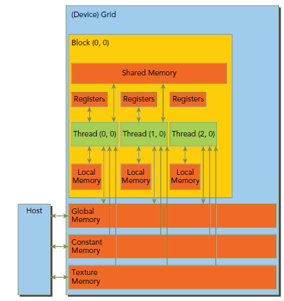
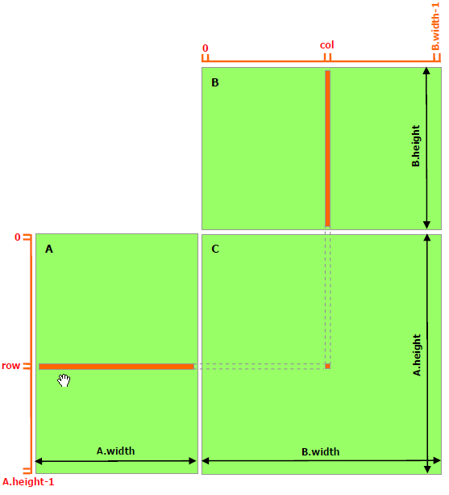

编程
内存
架构

- Registers
- kernel中没有什么特殊声明的自动变量都是放在寄存器中，当数组的索引是constant类型且在编译期能被确定的话，数组也是放在寄存器中；
- 寄存器变量是每个线程私有的，一旦thread执行结束，寄存器变量就会失效；避免register spilling到local memory上；
- 每个thread使用的寄存器数量是255个；
- Local memory：在local memory中的变量本质上跟global memory在同一块存储区；
- 不能确定它们是用常量索引的数组或任何超过寄存器限制的变量；
- 较大的结构体或者数组，也就是那些可能会消耗大量register的变量；
- 每个线程的local memory大小为512KB；
- Shared memory：
- 以block为单位分配，根据计算力不同其大小也不同；
- 获取shared memory的数据前必须先用__syncthreads()同步；
- 划分为不同的bank，不同bank的数据可以同时获取，同一个bank的数据同时获取需要按序；（32个bank）
- Constant memory：
- 64KB；
- 初始化必须在host端使用cudaMemcpyToSymbol函数；
- Texture and Surface memory
- Global Memory
新的共享内存架构(Turing)
统一shared memory，L1 and texture caching。

内存修饰
变量定义时，可以用以下进行修饰
__device__ ：存储在设备上，默认为global memory
__shared__： shared memory- block级的生命周期，block内所有线程共享
__constant__：constant memory- 类型可以是变量、数组，但不能是指针；
__managed__：变量在设备和主机上都能引用及操作
__restrict__：C99 中消除指针别名问题
- 定义指针变量，表明该变量没有别名；
- 更好的编译器优化；
L2 Cache
L2 cache是Global memory的缓存，从Cuda 11.0起，计算力8.0以上的device可以控制L2 cache的存储，获取global memory更高带宽和更低延迟。
TODO：使用
Shared Memory
比global memory更低的延迟，可以用来减少频繁的global memory访问，见矩阵乘法示例优化。
Page-Locked Host Memory
分配page-locked(pinned)主机内存， 相对于malloc分配的常规页内存（可以被交换到磁盘上）。
-
cudaHostAlloc()和cudaHostFree()函数。
-
cudaHostRegister()可以page-lock由malloc函数申请的内存。
-
page-locked的主机内存和device内存间的拷贝可以和kernel执行并发；
- 需要在内存中有连续的空间，如果内存紧张，可能分配时间会很长或者失败。
Portable 内存
cudaHostAllocPortable
分页锁定内存块可以与系统中的任何设备一起使用（多GPU卡系统）。
Write-Combining 内存
cudaHostAllocWriteCombined
避免使用主机的L1和L2缓存，当成只写内存，因此读取会比较慢。
Mapped 内存
cudaHostAllocMapped
分页锁定内存块可以映射到device内存。
函数
-
Device上的内存有两种分配形式：Linear memory 或 CUDA arrays。
-
- Linear memory : 使用 cudaMalloc，cudaFree和cudaMemCpy，计算力6.0之后地址空间在X86_64为47位；
- Linear memory也可以使用cudaMallocPitch() 和 cudaMalloc3D()，自动对2D/3D数组padding对齐；
- Cuda Arrays是对Texture memory的不透明的内存布局优化实现；
// cudaMallocPitch，2D数组示例 Host code
int width = 64, height = 64;
float* devPtr;
size_t pitch;
cudaMallocPitch(&devPtr, &pitch, width * sizeof(float), height);
MyKernel<<<100, 512>>>(devPtr, pitch, width, height);
// Device code
__global__ void MyKernel(float* devPtr, size_t pitch, int width, int height) {
for (int r = 0; r < height; ++r) {
float* row = (float*)((char*)devPtr + r * pitch); // important
for (int c = 0; c < width; ++c) {
float element = row[c];
}
}
}
Device内存
分配：
- cudaMalloc
销毁
- cudaFree
Host内存
内存数据传递
cudaError_t cudaMemcpy ( void* dst, const void* src, size_t count,cudaMemcpyKind kind )
kind可以为：cudaMemcpyHostToDevice，cudaMemcpyDeviceToHost，cudaMemcpyDeviceToDevice，cudaMemcpyHostToHost
__host__ cudaError_t cudaMemcpyToSymbol ( const T& symbol, const void* src, size_t count, size_t offset = 0, cudaMemcpyKind kind = cudaMemcpyHostToDevice )
symbolis a variable that resides in global or constant memory space.- Copies data to the given symbol on the device
__host__ cudaError_t cudaMemcpyFromSymbol ( void* src, const T& symbol, size_t count, size_t offset = 0, cudaMemcpyKind kind = cudaMemcpyDeviceToHost)
-
symbolis a variable that resides in global or constant memory space. -
Copies data from the given symbol on the device
Kernel
所有CUDA kernel的启动都是异步的，当CUDA kernel被调用时，控制权会立即返回给CPU。
kernel按照线程网格（Grid）的概念在显卡硬件（GPU）上执行。当要执行这些任务的时候，每一个Grid又把任务分成一部分一部分的block，block再分线程来完成。
Kernel<<>>(param1, param2, ...)
- Dg：grid的尺寸，说明一个grid含有多少个block，dim3/int类型
- Db：block的尺寸，说明一个block含有多少个thread，dim3/int类型
- Ns：可选参数，如果kernel中由动态分配内存的shared memory，需要在此指定大小，以字节为单位；
- S：可选参数，表示该kernel处在哪个流当中。
- grid尺寸，
- block尺寸，
内置变量
gridDim
- 常数，最多三维，保存线程格(grid)中每一维的大小。
blockDim
- 常数，最多三维，保存的是线程块(block)中每一维的线程数量。
blockIdx
- 当前执行设备代码的线程块的索引。
threadIdx
- 当前执行设备代码的线程索引。
修饰
__host__ ( 等价于没有修饰 )
- 在 host 上执行，通过 host 调用
__device__
- 在 device(GPU) 执行，通过 device 调用
__global__
-
返回为void，不能是成员函数
-
在 device 上执行，可以通过 host 调用，或者 device 调用（计算力大于3.2，T4计算力7.5）
RunTime
执行说明
- CUDA的设备在实际执行过程中，会以block为单位，把一个个block分配给SM进行运算；
- block中的thread又会以warp（线程束）为单位，对thread进行分组计算。
- 目前CUDA的warp大小都是32，也就是说32个thread会被组成一个warp来一起执行。
- 同一个warp中的thread执行的指令是相同的，只是处理的数据不同。
- 一个SM 一次只会执行一个block 里的一个warp
- 当遇到正在执行的warp 需要等待的时候（例如存取global memory 就会要等好一段时间），就切换到别的warp来继续做运算
异步并发执行
CUDA将以下操作暴露为可以相互并发操作的独立任务。
- Computation on the host;
- Computation on the device;
- Memory transfers from the host to the device;
- Memory transfers from the device to the host;
- Memory transfers within the memory of a given device;
- Memory transfers among devices.
Host和Device的并发
以下device上的操作对Host是异步：
- Kernel launches，
CUDA_LAUNCH_BLOCKING设置为1时表示Block； - 单个device内的内存拷贝;
- Memory copies from host to device of a memory block of 64 KB or less;
- 以
Async结尾的内存拷贝函数; - Memory set function calls.
并发的kernel执行
-
不同计算力的GPU，其kernel并发数也不一样，SM7.5可以并发128
-
不同CUDA context的kernel不能并发执行；
-
使用许多textures或大量local内存的kernel不太可能与其他kernel并发执行。
数据传输和内核执行的重叠
并发的数据传输
Streams
通过streams进行并发操作。
// API操作
cudaStream_t stream;
cudaStreamCreate(&stream);
cudaMemcpy(d_a, a, numBytes, cudaMemcpyHostToDevice, stream);
cudaStreamDestroy(stream);
在cuda中一个Stream是由Host代码发布的一系列在Device上执行的操作，必须确保顺序执行。不同streams里面的操作可以交叉执行或者并发执行。
默认stream：
Device操作包括：数据传输和kernels，在cuda中，所有的设备操作都在stream中执行。当没有指定stream时，使用默认的stream。默认stream是一个针对设备操作同步的stream，只有当所有之前设备上任何stream里面的操作全部完成时，才开始默认stream里面操作的执行，并且默认stream里面的一个操作必须完成，其他任何stream里面的操作才能开始。
例如以下代码：
cudaMemcpy(d_a, a, numBytes, cudaMemcpyHostToDevice);
increment<<<1,N>>>(d_a)
cudaMemcpy(a, d_a, numBytes, cudaMemcpyDeviceToHost);
从设备端来看，这三个操作都在默认stream中，并且按顺序执行；从主机端来看，数据传输是阻塞的或者同步传输，而kernel是异步的。第一步主机到设备的数据传输是同步的，CPU线程不能到达第二行直到主机到设备的数据传输完成。一旦kernel被处理，CPU线程移到第三行，但是该行的传输不能开始，因为设备端正在执行第二行的内容。
非默认stream：
- 非默认stream中的数据传输使用函数
cudaMemcpyAsync()，这个函数在主机端是非阻塞的，传输处理后控制权马上返回给主机线程。
显示同步：
cudaStreamSynchronize(stream); // 等待该流下的所有操作完成
cudaDeviceSynchronize();
cudaStreamWaitEvent();
cudaStreamQuery()
隐式同步：
如果主机线程在它们之间执行了以下操作之一，不同streams的两个命令操作不能并发：
- page-lock的host内存分配；
- device内存分配或设置；
- 同一个device内存的拷贝；
- 任意对NULL Stream（默认stream）的Cuda命令；
- 在L1/shared内存配置的交换；
重叠行为(TODO)：
Host Functions (Callbacks)(TODO)
Stream Priorities(TODO)
示例
矩阵乘法
基本思路
将C矩阵的行、列，划分成 Blocks，每个Block里面是Threads，kernel计算时每个thread对应一个C中一个元素，获取A中对应行，B中对应列。
但是该方法有重复读取，A中每一行和B中每一列。

优化思路

// Matrices are stored in row-major order:
// M(row, col) = *(M.elements + row * M.stride + col)
typedef struct {
int width;
int height;
int stride;
float* elements;
} Matrix;
// Get a matrix element
__device__ float GetElement(const Matrix A, int row, int col) {
return A.elements[row * A.stride + col];
}
// Set a matrix element
__device__ void SetElement(Matrix A, int row, int col, float value){
A.elements[row * A.stride + col] = value;
}
// Get the BLOCK_SIZExBLOCK_SIZE sub-matrix Asub of A that is
// located col sub-matrices to the right and row sub-matrices down
// from the upper-left corner of A
__device__ Matrix GetSubMatrix(Matrix A, int row, int col) {
Matrix Asub;
Asub.width = BLOCK_SIZE;
Asub.height = BLOCK_SIZE;
Asub.stride = A.stride;
Asub.elements = &A.elements[A.stride * BLOCK_SIZE * row + BLOCK_SIZE * col];
return Asub;
}
// Thread block size
#define BLOCK_SIZE 16
// Forward declaration of the matrix multiplication kernel
__global__ void MatMulKernel(const Matrix, const Matrix, Matrix);
// Matrix multiplication - Host code
// Matrix dimensions are assumed to be multiples of BLOCK_SIZE
void MatMul(const Matrix A, const Matrix B, Matrix C) {
// Load A and B to device memory
Matrix d_A;
d_A.width = d_A.stride = A.width; d_A.height = A.height;
size_t size = A.width * A.height * sizeof(float);
cudaMalloc(&d_A.elements, size);
cudaMemcpy(d_A.elements, A.elements, size,
cudaMemcpyHostToDevice);
Matrix d_B;
d_B.width = d_B.stride = B.width; d_B.height = B.height;
size = B.width * B.height * sizeof(float);
cudaMalloc(&d_B.elements, size);
cudaMemcpy(d_B.elements, B.elements, size,
cudaMemcpyHostToDevice);
// Allocate C in device memory
Matrix d_C;
d_C.width = d_C.stride = C.width; d_C.height = C.height;
size = C.width * C.height * sizeof(float);
cudaMalloc(&d_C.elements, size);
// Invoke kernel
dim3 dimBlock(BLOCK_SIZE, BLOCK_SIZE);
dim3 dimGrid(B.width / dimBlock.x, A.height / dimBlock.y);
MatMulKernel<<<dimGrid, dimBlock>>>(d_A, d_B, d_C);
// Read C from device memory
cudaMemcpy(C.elements, d_C.elements, size,
cudaMemcpyDeviceToHost);
// Free device memory
cudaFree(d_A.elements);
cudaFree(d_B.elements);
cudaFree(d_C.elements);
}
// Matrix multiplication kernel called by MatMul()
__global__ void MatMulKernel(Matrix A, Matrix B, Matrix C) {
// Block row and column
int blockRow = blockIdx.y;
int blockCol = blockIdx.x;
// Each thread block computes one sub-matrix Csub of C
Matrix Csub = GetSubMatrix(C, blockRow, blockCol);
// Each thread computes one element of Csub
// by accumulating results into Cvalue
float Cvalue = 0;
// Thread row and column within Csub
int row = threadIdx.y;
int col = threadIdx.x;
// Loop over all the sub-matrices of A and B that are
// required to compute Csub
// Multiply each pair of sub-matrices together
// and accumulate the results
for (int m = 0; m < (A.width / BLOCK_SIZE); ++m) {
// Get sub-matrix Asub of A
Matrix Asub = GetSubMatrix(A, blockRow, m);
// Get sub-matrix Bsub of B
Matrix Bsub = GetSubMatrix(B, m, blockCol);
// Shared memory used to store Asub and Bsub respectively
__shared__ float As[BLOCK_SIZE][BLOCK_SIZE];
__shared__ float Bs[BLOCK_SIZE][BLOCK_SIZE];
// Load Asub and Bsub from device memory to shared memory
// Each thread loads one element of each sub-matrix
As[row][col] = GetElement(Asub, row, col);
Bs[row][col] = GetElement(Bsub, row, col);
// Synchronize to make sure the sub-matrices are loaded
// before starting the computation
__syncthreads();
// Multiply Asub and Bsub together
for (int e = 0; e < BLOCK_SIZE; ++e)
Cvalue += As[row][e] * Bs[e][col];
// Synchronize to make sure that the preceding
// computation is done before loading two new
// sub-matrices of A and B in the next iteration
__syncthreads();
}
// Write Csub to device memory
// Each thread writes one element
SetElement(Csub, row, col, Cvalue);
}